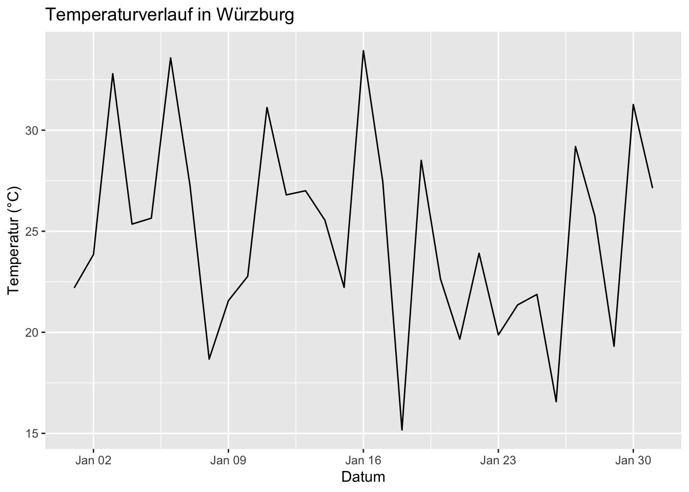
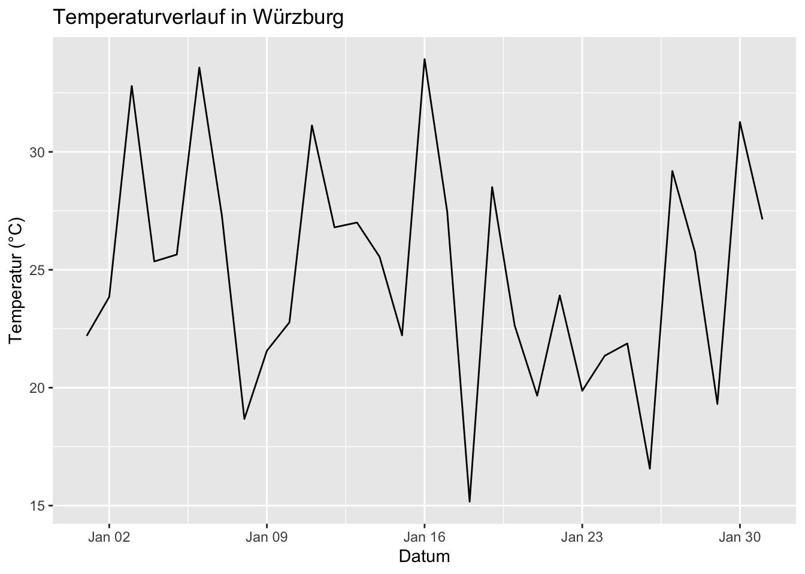
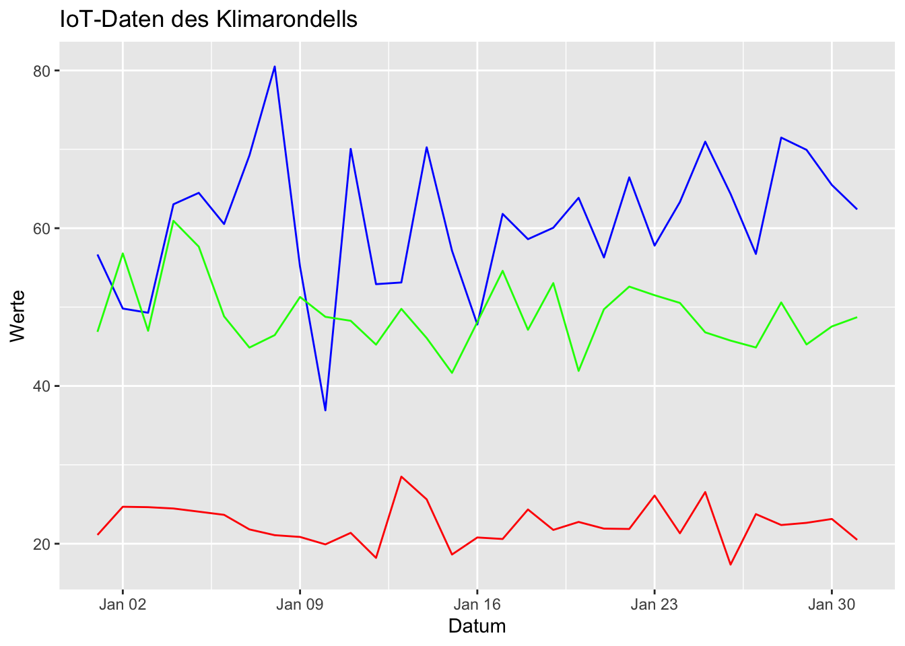
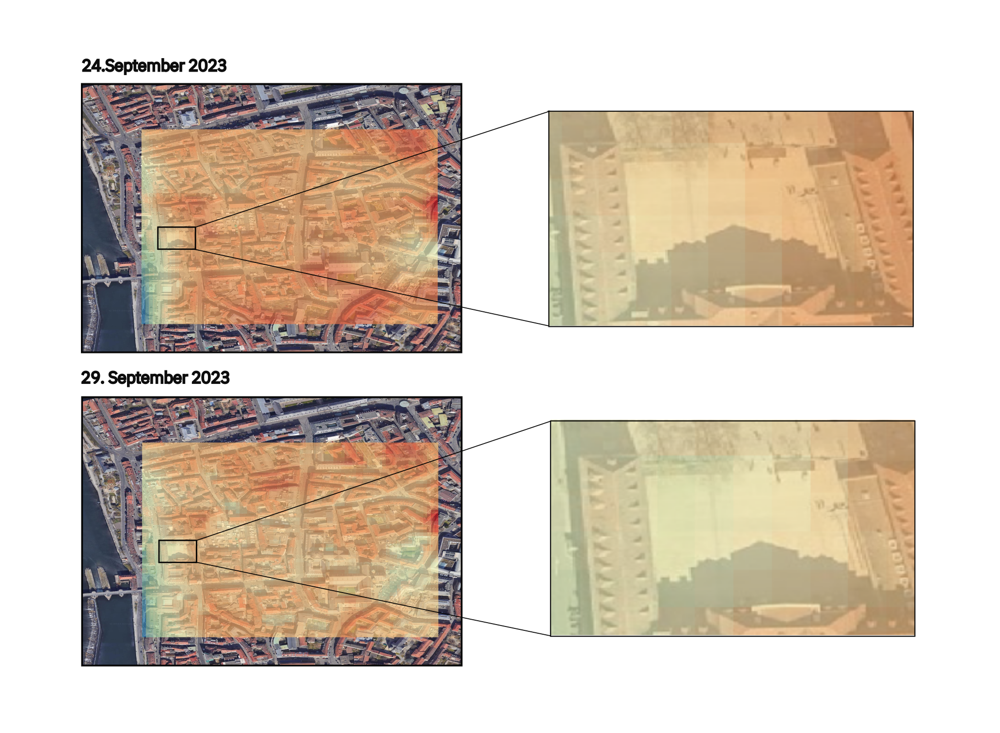
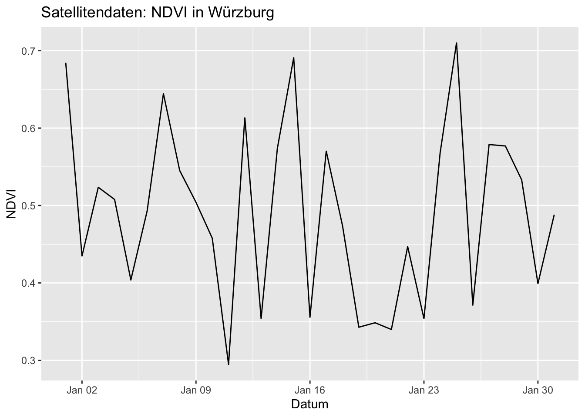

Attaching package: 'dplyr'The following objects are masked from 'package:stats':
filter, lagThe following objects are masked from 'package:base':
intersect, setdiff, setequal, union
Tage mit extrem hohen Temperaturen zwischen 35 und 40 Grad Celsius sind in Würzburg immer häufiger anzutreffen, besonders im Innenstadtbereich. Das “Klimarondell” stellt eine innovative Lösung dar, um der Hitze entgegenzuwirken und für ein kühleres Stadtklima zu sorgen.

Das Gerät bietet zahlreiche Funktionen: Es spendet Schatten, befeuchtet und reinigt die Luft, senkt die Temperatur und produziert sogar Strom. In diesem Dokument beleuchten wir das Projekt genauer und analysieren die gesammelten Daten, um die Effektivität des Klimarondells zu bewerten.
Wir beginnen unsere Analyse mit den Temperaturdaten der Stadt Würzburg, die wir vom Deutschen Wetterdienst (DWD) bezogen haben. Die folgende Grafik zeigt den Temperaturverlauf über einen bestimmten Zeitraum.
Attaching package: 'dplyr'The following objects are masked from 'package:stats':
filter, lagThe following objects are masked from 'package:base':
intersect, setdiff, setequal, union
Die Temperatur in Würzburg zeigt im betrachteten Zeitraum Schwankungen, was auf verschiedene Wetterbedingungen zurückzuführen ist. Diese Daten dienen als Grundlage für unsere weitere Analyse.
Im nächsten Schritt betrachten wir die IoT-Daten, die direkt vom Klimarondell gesammelt wurden. Die Daten könnten verschiedene Umweltvariablen wie Temperatur, Luftfeuchtigkeit und Luftqualität umfassen.

Die IoT-Daten zeigen, dass das Klimarondell eine kühlende Wirkung auf seine unmittelbare Umgebung hat und somit zur Verbesserung des Mikroklimas beiträgt.
Abschließend werfen wir einen Blick auf die Satellitendaten, um ein umfassendes Bild der Situation zu erhalten.


Die Satellitendaten liefern wertvolle Informationen über die Vegetation in der Region und tragen dazu bei, die Effekte des Klimarondells auf einer größeren Skala zu verstehen.
Auf Basis der analysierten Daten können wir festhalten, dass das Klimarondell einen positiven Einfluss auf das Mikroklima im Bereich seines Standortes hat. Es trägt dazu bei, die Temperatur zu senken, die Luft zu reinigen und bietet gleichzeitig einen angenehmen Aufenthaltsort im Freien. Dieses Projekt zeigt, wie innovative Lösungen zur Anpassung an den Klimawandel beitragen und die Lebensqualität in städtischen Gebieten verbessern können.
Das Klimarondell ist ein Pilotprojekt, und wir sind auf Ihr Feedback angewiesen, um es weiter zu verbessern. Besuchen Sie den Standort, erleben Sie die Vorteile selbst und teilen Sie uns Ihre Meinung mit. Gemeinsam können wir an einer kühleren und lebenswerteren Stadt arbeiten.